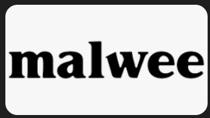

Engenheiro de Dados & IA
GCP · Azure · Python · SQL · LLMs · RAG · Agentes de IA
Fortaleza, CE, Brasil
Profissional de dados com mais de 5 anos de experiência, incluindo 3 anos como Cientista de Dados. Comprovada capacidade de projetar e manter pipelines de dados escaláveis, aplicar modelos de machine learning a problemas reais e entregar soluções analíticas de alta qualidade.
Forte raciocínio lógico e analítico, com experiência em ambientes de nuvem (GCP, Azure, AWS) e atuação em projetos de Inteligência Artificial, incluindo agentes de IA, RAG, embeddings e Large Language Models.
Fortaleza, CE, Brasil
Disponível para trabalho remoto

MalweeSauter Digital — São Paulo
Entrega de soluções de engenharia de dados e inteligência artificial para grandes marcas brasileiras como CIMED, Leo Madeiras, Motiva, Piracanjuba e Malwee. Responsável pela construção e manutenção de pipelines de dados, integração com fontes ERP e desenvolvimento de workflows baseados em IA em ambientes multi-cliente.
Accenture — São Paulo (Cliente: Itaú)
Consultor embarcado no Itaú atuando nas frentes de Ciência de Dados e Engenharia de IA. Desenvolveu modelos de propensão e classificação com Cidarta. Na frente de IA, desenvolveu agentes com Microsoft Copilot Studio e implementou base de conhecimento com RAG, embeddings, busca híbrida e filtragem dinâmica para respostas contextualizadas em escala.
Prezensa — Rio de Janeiro (Cliente: Rede Globo)
Atuação com a Rede Globo na criação e manutenção de pipelines de dados no GCP com Vertex AI. Desenvolvimento de scripts com LLMs (Gemini, ChatGPT) para transcrição e diarização de locutores (CHIRP 3) em conteúdos do Big Brother Brasil.
Tribunal de Justiça do Recife — Recife
Criação e manutenção de ETLs para processos internos do TJ, garantindo fluxo confiável de dados entre os sistemas operacionais da instituição.
PagBank — São Paulo
Suporte e manutenção em sistemas de bancos de dados com tabelas, views e procedures. Migração de dados entre ambientes e implementação de processos de CI/CD em desenvolvimento e produção.
KIS — São Paulo (Amway Global & Estée Lauder)
Consultoria em visualização de dados com GCP para Amway Global e suporte de qualidade de dados para Estée Lauder. Gerenciamento de pipelines, migração entre clouds e anonimização de dados conforme LGPD/GDPR.
Stefanini — Brasília (Banco do Brasil & Itaú)
Construção de ETLs para o Banco do Brasil. Conversão de SAS para Python. Desenvolvimento de modelo de NLP e Machine Learning para análise de mensagens no Itaú via AWS SageMaker. Práticas de DataOps.
Escola de Saúde Pública do Ceará — Fortaleza
Raspagem, tratamento e injeção de dados com Python. Desenvolvimento de pipelines e gerenciamento de banco PostgreSQL. Produção de dashboards de métricas com Metabase.
Universidade Federal do Ceará — Fortaleza
ML aplicado à análise de tomografias de rochas do Pré-Sal. Visão Computacional para reconstrução de meio poroso 3D. Simulações Numéricas com Lattice-Boltzmann e processamento de textos com NLP.
Universidade Federal do Ceará — Fortaleza
2019 – Presente
Redes Neurais e Simulações Numéricas em Mecânica dos Fluidos.
IESB — Brasília
2021 – 2024
Universidade Federal do Ceará — Fortaleza
2013 – 2017
Ênfase em simulações de Física da Matéria Ativa.
Universidade Federal do Ceará — Fortaleza
2009 – 2013
Estou disponível para oportunidades em engenharia de dados, IA e ciência de dados. Entre em contato!
jesse.oliveira@fisica.ufc.br
Telefone / WhatsApp
+55 85 98156-3690
Localização
Fortaleza, CE, Brasil